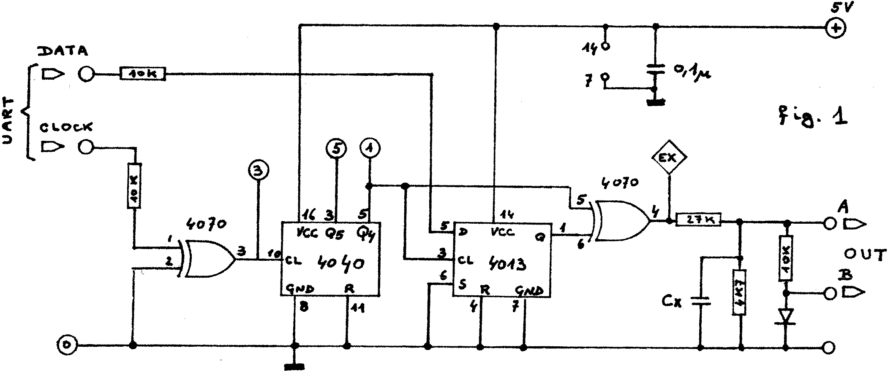

80-Bus News |
July–October 1982 · Volume 1 · Issue 3 |
| Page 25 of 51 |
|---|
are produced on each negative going transition of the clock signal. This causes the signal to have a positive going edge when the data bit is 0 and a negative going edge when the data bit is 1. When there is no change of data between consecutive clock pulses, pulses of the opposite sense to the original data bit are produced but are ignored by the decoding hardware.
Decoding of the recorded signal is not so simple, but makes use of the fact that if the signal does not change sign during a clock period, the data itself has not changed sign. The incoming pulses are detected by monostable which gives a pulse if the signal is longer that half a clock period. The pulse from the monostable triggers a flipflop, the output of which will echo the original recorded data, assuming that the data start was synchronised in the first place.
The bit train for the encoder is provided by the Nascom UART as before. As the data rate is to be 3900 baud, and the UART clock must be sixteen times the baud rate, a clock frequency of 62.5KHz is required. On the Nascom 1 this may be obtained from pin 11 of IC1. To avoid complication within the encoder (fig. 1), a 4040 divider is used, fed with 62.5KHz from the same point, the incoming frequency being divided by 16 to produce the 3.9KHz clock rate for the encoder, to match the data rate coming from the UART. A 4013 flipflop is used to ensure that the data changes with the positive edge of the 3.9KHz clock before being fed to one quarter of a 4070 quad NOR gate which does the actual encoding. The output signal is fed to a resistive divider and the recorder signal may be taken from the high or low level output depending upon the recorder requirements.
| Cx | – 10nF for 3900 baud | DATA | – from Nascom 1 IC29 pin 25 |
| – 6n8F for 4800 baud | CLOCK | – from Nascom 1 IC1i pin 11 | |
| – also connect to central posn. of LK4 |
Fig. 2 is the circuit diagram of the decoder. The cassette output is fed into a cheap voltage comparator IC, TL081, which squares the signal, the output of which is fed to a quarter of a 4070 which further improves the signal shape. The shaped signal is fed to both the data input of the output flipflop, and the positive trigger input of half of a 4038 monostable which regenerates the clock. The time constant of the monostable is adjusted by the preset pot P, and to ease adjustment, this should be a multiturn type. The second half of the 4038 is used without a time constant to convert the regenerated pulses into spikes which clock the data into the 4013 output flipflop. The data and data complements are available at the Q outputs of the 4013. The output of one of these is connected to the data input of the Nascom UART. Unfortunately it is not possible to determine which data output should be connected to the UART until the unit is completed, when the correct connection should be determined experimentally.
| Page 25 of 51 |
|---|